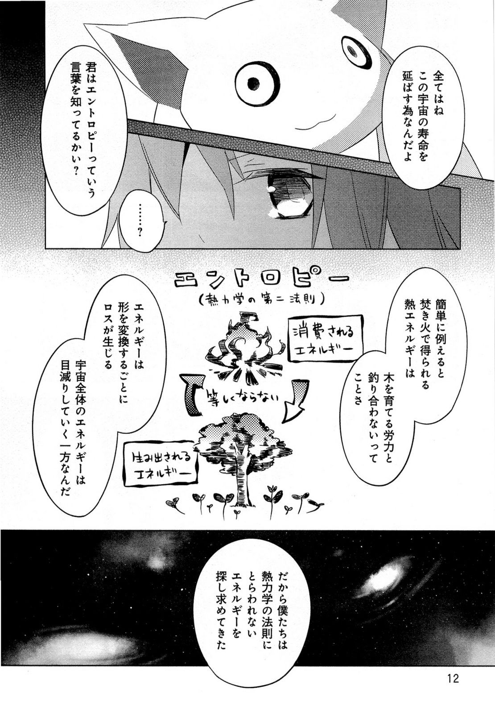
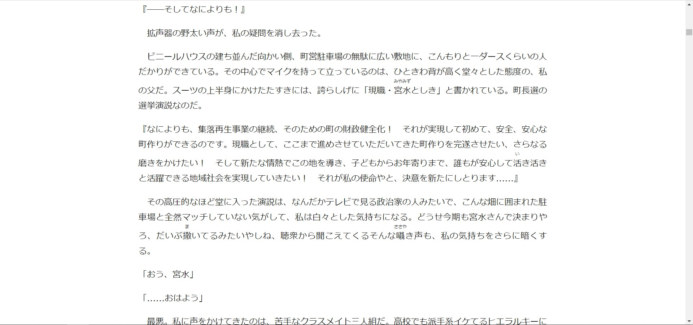

Getting into Reading¶
Reading Japanese is not as difficult as it seems. This guide will go through how to (comfortably) get into reading.
You must already know how to read hiragana and katakana before doing any of this.
You must already have a foundation in spoken Japanese before reading.
This means you have at least 100 hours or so of raw listening immersion, this is important if you do not want to end up with a poor accent. Also, I seriously recommend you have completed a core Anki deck before doing this. Like Tango N5+N4 completed.
Key Points¶
- Learning to read will always be painful in the start. You need to realise this, this is why you should never "wait until you're ready" because you will never be ready until you actually start reading properly.
- Do not read without some listening immersion experience.
- Don't worry about not comprehending a sentence no matter how much times you read it, in other words, learn to tolerate ambiguity. Things will become clearer as you read more.
- If you hate reading books in general, you can always play visual novels or read manga, both of which are very good for reading.
- Your first light novel/book whatever will always be the most painful. Get through it no matter how painful it is or how long is takes you.
- Don't rush yourself. Take your time. Go at your own pace. You wouldn't want to burnout and end up never reading again or anything.
Learning how to read¶
As mentioned earlier, make sure you have an adequate vocabulary size and a grasp of Japanese grammar before reading, this will make things much easier.
Japanese subtitles¶
Japanese subtitles are a good way to introduce yourself to reading, assuming you already understand a fine amount in raw, trying to read the subtitles can be good reading practice. However make them something quick to let go of and in the future only consider using Japanese subtitles for mining instead of for reading.
Manga¶
Manga is probably the best way to get into reading without it being too intimidating as the way its written is similar to spoken Japanese, and assuming you're already quite familiar with that, it won't be much of a trouble getting used to. 
Manga: Mahou Shoujo Madoka Magica
As you can see, manga uses all 3 writing systems, hiragana, katakana and kanji, therefore manga can be a great way to practice your skills in all 3 fields. But how about looking up words? That's literally a scan isn't it? Use the tool KanjiTomo and hover over the text, and it will automatically look it up, but it's a bit quirky and doesn't always work, in that case, you can use Capture2text, set the OCR language to Japanese and highlight the text you want and it will copy it onto your clipboard, after that you can paste it into Jisho. It's actually quicker than it sounds.
If Capture2Text fails, then use the Google Translate handwriting feature. No matter how shit you write the kanji, it will detect it. After that you can copy and paste it into Jisho. Expect manga to be pretty hard for you at first, but over time it will smoothen out and get easier. You just need to read more. You just need to read a lot.
Light Novels¶
Even if you read like 100 manga, you still need to read light novels since you need to learn literary Japanese. Literary Japanese is not that hard as it sounds, it's only slightly different from spoken Japanese and will be easy to get used to. For reading light novels, I recommend using Yomichan using the JMDict (English) dictionary along with the Kenkyuusha Japanese-English dictionary and KireiCake. JMdict is okay, but Kenkyuusha is even better, JMdict has things not in the Kenkyuusha and vice versa. They can be found in my Yomichan Dictionaries pack. You can look up words by holding the Shift key and hovering over a word. I seriously recommend you read novels on this site: Itazuraneko Old Library, sort by kanji count, usually 1,000-1,600 kanji count is a good, this just means how long the book is if you actually look at it.
Your first light novel will be extremely painful, but your second light novel won't be as painful. Expect a light novel to take a month or so to finish reading when you're first starting out, it will get quicker overtime (I can finish a light novel in a week). Just read more, read a lot. Reading scans or physicals like these is not recommended. Note: I am not speaking against 縦書き, (vertical), the image below is an example of a scan. Novel: Hibike! Euphonium
 Novel: Nichijou no Natsuyasumi
Novel: Nichijou no Natsuyasumi
You need to read stuff like this:

Novel: Kimi no Na wa.
Click to enlarge
{kind=link}
This is digital. Very important. I can select the text and use Yomichan with it.
Visual Novels¶
 Visual Novel: Angel Beats! -1st beat-
Visual Novel: Angel Beats! -1st beat-
Visual Novels are very good if you hate reading books. It's helped supercharge my reading as I usually get bored quickly reading light novels. It's similar to watching anime with Japanese subtitles. It is also good for making AnimeCards from and also serve as semi-listening semi-reading immersion. Make sure you have texthooking setup, you can find out how to do that here. To get good at reading visual novels, you just need to read more, you just need to read a lot
Conclusion¶
Don't worry about how much "kanji" you "know". You can start reading after you have enough listening experience, and have finished a grammar guide or something. That's all. Don't hesitate. Don't feel like you're "not ready yet" because you will never be if you don't start reading. Read more, read a lot, that's how you get good at reading. No hacks, no tricks, sorry.
Have fun immersing!